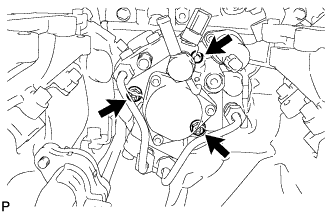
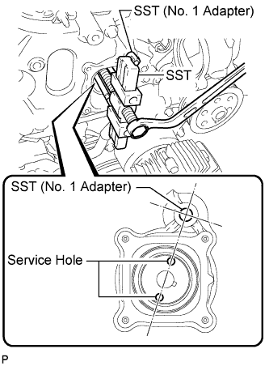

FUEL SUPPLY PUMP > REMOVAL |
| 1. DISCONNECT CABLE FROM NEGATIVE BATTERY TERMINAL |
Disconnect the cables from the negative (-) main battery and sub-battery terminals.
| 2. REMOVE THERMOSTAT |
Remove the thermostat (Click here).
| 3. REMOVE FUEL COOLER ASSEMBLY |
Remove the fuel cooler assembly (Click here).
| 4. REMOVE TIMING GEAR COVER INSULATOR |
 |
w/o Viscous Heater:
Remove the 2 bolts and timing gear cover insulator.
 |
w/ Viscous Heater:
Remove the timing gear cover insulator.
| 5. REMOVE TIMING CHAIN COVER PLATE |
 |
Remove the 4 bolts, cover plate and gasket.
| 6. REMOVE NO. 1 FUEL PIPE |
 |
Remove the union bolt, fuel pipe and 2 gaskets.
| 7. REMOVE FUEL SUPPLY PUMP |
 |
Using a wrench, hold the crankshaft.
 |
Remove the set nut.
 |
Disconnect the fuel temperature sensor connector.
 |
Using a 6 mm hexagon wrench, remove the bolt.
Loosen the 2 nuts.
 |
Disconnect the pump from the supply pump drive gear.
Install SST (No. 1 adapter) to the timing chain cover.
Rotate the supply pump gear so that the service holes are aligned with SST (No. 1 adapter) as shown in the illustration.
Using SST, disconnect the pump from the supply pump drive gear.
Remove the 2 nuts.

Remove the O-ring from the supply pump.